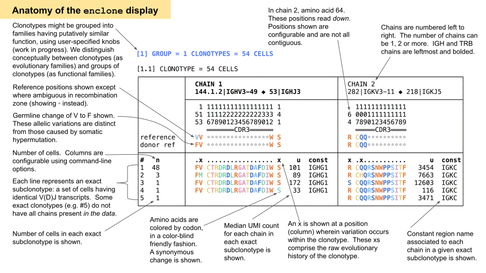

10x Genomics Chromium Single Cell V(D)J data containing B cell receptor (BCR) and T cell receptor (TCR) RNA sequences are entered as input data to enclone. Based on the input, enclone finds and organizes cells arising from the same progenitors into groups (clonotypes) and compactly displays each clonotype along with its salient features, including mutated amino acids.
enclone (beta) is provided as a tool for use by the community to accelerate immunology research. enclone is only supported via enclone@10xgenomics.com. The clonotype assignment algorithm that is part of enclone is integrated into Cell Ranger.
enclone has been designed for immunologists but anyone can download and experiment with it.
Background: when you get sick, your body mounts an immune response by selectively amplifying immune cells and mutations within these selected cells. enclone allows you to see the history of single immune cells within a biological sample (such as a blood draw or biopsy). This history reflects how the cognate receptors of these cells evolved in response to antigens, including viruses, bacteria, and tumors.
The body defends itself from antigens, like viruses, bacteria, and tumors, by recognizing the antigens and mounting an immune response through selective amplification of immune cells and mutations within selected cells. enclone enables profiling of the history of single immune cells within a biological sample (such as a blood draw or a biopsy) by mapping the evolution of the cognate BCRs and TCRs of those cells responding to antigen exposure. This history reflects how the cognate receptors of these cells evolved in response to various antigens.
Using enclone to profile B and T cell receptors for any sample using Chromium Single Cell V(D)J as input enables you to make the best use of your data. You can explore the biology of these cells without help from a computational expert!
The objective of enclone is to:
|
Find and display clonotypes: groups of T and B cells sharing the same fully rearranged common ancestor. |
Find: It is easy to mistakenly put unrelated cells in the same clonotype, or "pollute" a clonotype with extraneous chains. enclone's algorithms make finding accurate. Display: It is challenging to compactly represent a large repertoire of data. enclone enables compact, easy-to-grasp data display. |
|---|
The diversity of BCR and TCR chains, containing various combinations of V, D, and/or J segments, broadens the immune repertoire to protect against a wide variety of pathogens. The figure below illustrates the concept of a BCR clonotype. A similar concept applies to TCRs but without somatic hypermutations.
Each cell in a clonotype is typically represented by two or three chains, and this information is present and directly observable in single cell V(D)J data. enclone computationally approximates the clonotypes from the data with high accuracy (see below). The methods of enclone are described briefly in the online documentation for enclone, and will also be described separately in more detail.
Clonotyping performance. To test the performance of enclone, we combined data from 462 BCR enriched libraries from 31 donors. enclone detected a total of 517,886 clonotypes. Of the detected clonotypes, 12,757 contained at least two cells, of which 25 (0.20%) of the clonotypes contained receptors from multiple donors, and thus were erroneous. The low error rate is a consequence of the paired chain data and the enclone algorithm, which minimizes the placement of unrelated cells in the same clonotype.
enclone has unique features!
Unique insights into 10x Genomics data: enclone has been designed and tested extensively to gain in-depth insight and perspective regarding 10x Genomics single cell V(D)J datasets. Other similar tools may be used, but frequently, enclone will provide a different answer, which in turn may affect the biological interpretation of the data.
Speed: enclone is very fast, allowing analysis of datasets in seconds.
Easy installation: The software is easy to install and to use.
10x Genomics single cell 5' dataâ€
†BCR or TCR RNA sequences generated using the 10x Genomics Chromium Single Cell Immune Profiling Solution and Cell Ranger 3.1 or higher are the inputs to enclone. enclone can also process and display gene expression and Feature Barcode data from the same cells. The latter can be used to quantify cell surface proteins, antigen binding, CRISPR sgRNA, and other cellular features. You can see a list of publications that use 10x VDJ data here.
enclone is beta software††released under this license. Binary executables for Linux and Mac can be directly downloaded from this page, as can sample 10x Genomics datasets. enclone can be run on a laptop, desktop, or server.
To use enclone, basic knowledge of the command line is necessary. The command line is easy to learn, and a colleague may be able to help you if you are unfamiliar. Additional skills, like programming, are not required. The command line can be dynamically changed to select specific clonotypes and fields you wish to see. enclone is fast, typically responding in seconds (if run on a single dataset).
enclone, in addition to Cell Ranger and Loupe (and in which the core algorithm of enclone will be integrated at a later point in time), supports the analysis of V(D)J and other data from the Chromium Single Cell Immune Profiling solution.
††beta software implies that it is still being actively developed, with features being added/modified, and on rare occasions may involve breaking syntax that previously worked. See this page for the history of changes.
You can run enclone directly from a Linux or Mac terminal window; see here for Windows options; see here if you have a problem.
| Type this |
|
where SIZE is
small, medium or large, according to:
|
|---|
|
|
load small dataset collection (one dataset, 123085) |
30 MB |
do this if your internet connection is very slow |
|---|---|---|---|
|
|
load medium dataset collection |
350 MB |
do this for a moderate number of datasets (~15) |
|
|
load large dataset collection |
2600 MB |
do this for a large number of datasets (~110) |
The command does three things:
~/bin.~/bin is included.
~/enclone.To update, type the same command!
You can also type enclone UPDATE, which does the same thing (except for older versions
of enclone). Only required files will be downloaded.
See history for the history of changes to
enclone.
Information about previous releases of enclone, matching particular Cell Ranger releases is here, along with an inventory of enclone changes that affect Cell Ranger output.
Running enclone can be as simple as typing e.g.
enclone BCR=/home/my_name/experiment_123
where the path is where your Cell Ranger outputs live, but there are many options to learn about. For example, if you want to combine many datasets, you can do that, but you probably need to provide a metadata file that describes the datasets. You can find most of the enclone documentation within its online menus. To get started you should:
Type enclone help, to make sure your terminal window works for
enclone.
A few things you need to know:
1. To view the online help, your terminal window needs to be 100 characters wide
(or wider).
2. When you view enclone output, you will in general need to make your window even
wider.
3. How wide depends on the data and the fields you choose to show.
4. If it's not wide enough, the output will "wrap" and be very confusing!
Type enclone to get to the main enclone help menu.
From any page, clicking on the banner at the top will take you back here.
|
| ||||||||||||||||||||||||||||||||||||||||||||||||||||||||||||||||||||||||||||||||||
The example below shows how enclone displays clonotypes. Understanding this display is important for using enclone. Consult the available enclone documentation and use the sample datasets to understand enclone features and output.
 Notice the compression in two directions:Approximately the same output would be obtained by typing:
enclone BCR=123085 CDR3=CTRDRDLRGATDAFDIW
The directory 123085 is in the directory ~/enclone/datasets and
contains some files from a Cell Ranger run, obtained from a human ovarian cancer sample.
How does enclone find my data?
It uses a search path called PRE that is preset to
~/enclone/datasets,~/enclone/datasets2, and which can be set to any value, either
by setting PRE=... on the command line, or by setting the environment variable
ENCLONE_PRE. To find your data, enclone prepends PRE to the value of
BCR or TCR given on the command line.
For example, all of the following argument combinations do the same thing:
1. BCR=123085 (using the default value of PRE)
2. PRE=~/enclone/datasets BCR=123085
3. PRE=~/enclone BCR=datasets/123085
4. BCR=~/enclone/datasets/123085.
There is also an argument META that is convenient for specifying multiple
datasets. See here for how.
Please note that while paths can have non-Latin characters, best practice is to not have
blanks, tabs, etc. in path names. enclone can be made to work with such characters by double
quoting the paths, but it makes things harder, and other programs you might use may break.
The argument CDR3=CTRDRDLRGATDAFDIW causes enclone to display only clonotypes in
which
the given CDR3 sequence occurs. Many other filters are provided. In the absence of filters, all
clonotypes are shown. Clonotypes are shown from largest to smallest, and the output is
automatically paged, so you can scroll through it.
By default, enclone prints clonotypes in this human-readable form. You can also instruct enclone to print clonotypes in machine-readable forms that are suitable for input to other programs.
Gene expression and Feature Barcode data can be displayed simultaneously alongside VDJ data. For example, here we add columns for the same clonotype, showing the median number of UMIs detected for all genes, and a particular gene:
[1] GROUP = 1 CLONOTYPES = 51 CELLS
[1.1] CLONOTYPE = 51 CELLS
┌──────────────────────────┬──────────────────────────────────────┬───────────────────────────────┐
│ │ CHAIN 1 │ CHAIN 2 │
│ │ 144.1.2|IGHV3-49 ◆ 53|IGHJ3 │ 279|IGKV3-11 ◆ 217|IGKJ5 │
│ ├──────────────────────────────────────┼───────────────────────────────┤
│ │ 1 11111111111111111 1 │ 1111111111111 │
│ │ 51 11112222222222333 4 │ 6 0001111111111 │
│ │ 53 67890123456789012 1 │ 4 7890123456789 │
│ │ ═══════CDR3══════ │ ═════CDR3════ │
│reference │ VV ◦◦◦◦◦◦◦◦◦◦◦◦◦◦◦◦W S │ R CQQ◦◦◦◦◦◦◦◦◦◦ │
│donor ref │ FV ◦◦◦◦◦◦◦◦◦◦◦◦◦◦◦◦W S │ R CQQ◦◦◦◦◦◦◦◦◦◦ │
├──────────────────────────┼──────────────────────────────────────┼───────────────────────────────┤
│# n gex IGHV3-49_g │ .x ................. x u const │ x .x........... u const│
│1 46 13385 324 │ FV CTRDRDLRGATDAFDIW S 101 IGHG1 │ R CQQRSNWPPSITF 3769 IGKC │
│2 3 9303 544 │ FM CTRDRDLRGATDAFDIW S 73 IGHG1 │ R CHQRSNWPPSITF 7548 IGKC │
│3 1 15986 1528 │ FV CTRDRDLRGATDAFDIW S 279 IGHG1 │ S CQQRSNWPPSITF 12446 IGKC │
│4 1 1548 11 │ FV CTRDRDLRGATDAFDIW S 33 IGHG1 │ R CQQRSNWPPSITF 116 IGKC │
└──────────────────────────┴──────────────────────────────────────┴───────────────────────────────┘
To obtain this, we added the extra arguments
GEX=123217 LVARSP=gex,IGHV3-49_g
to the previous command. The GEX part points to the directory containing gene
expression data. The LVARSP part defines the additional columns
to be displayed.
Other types of data can be brought in via Feature Barcoding / Feature Barcode Technology. For example, the response to multiple antigens can be measured using approaches such as those mentioned in the LIBRA-seq and Wilson/Stamper/Dugan et al. papers. These data can be displayed as additional columns.
|
After selecting multiple clonotypes in enclone, you can display them using a "honeycomb" plot. In this instance, pre- and post-vaccination samples were collected from four individuals, many datasets were generated for each sample, and these were combined in a single call to enclone. Clonotypes containing at least ten cells are shown. The plot was generated by adding
to the enclone command line, yielding the image shown here as the file
For more information about honeycomb plots, see here. |
|---|
There are many ways to use 10x Genomics data to study immunobiology.
Response to an antigen or vaccine: enclone is a great tool for studying responses to a vaccine. For example, in the previous section, the red clonotypes may represent responses to antigens in the vaccine.
Vaccine and therapeutic antibody development: For certain infectious agents e.g. COVID-19, a vaccine does not currently exist; different approaches may be employed in pursuit of this goal. One such approach is to identify patient and survivor B cell clonotypes that expand in response to the infectious disease. These define antibodies that can be used to design passive or active vaccines.
Additional power is added by mapping antigen specificity to multiple antigens directly via Feature Barcode Technology (one example of this is the LIBRA-seq publication). These data are easy to display in enclone. Candidates can be selected directly for vaccine or therapeutic development by picking large clonotypes with high antigen counts and single or multiple antigen specificities.
We are actively working on further functionality that will make this process even more effective.
See this vignette to learn how to generate phylogenetic trees using enclone.
Another example use of enclone is the detection of illusory clonotypes.
Please contact us with your questions and comments! We look forward to hearing your feedback and ideas to further evolve enclone.
Our address is enclone@10xgenomics.com.
To send us enclone output, please simply cut and paste text, rather than send a screenshot, except when necessary. Please send both the command you used and the output.
enclone is provided as a tool for use by the community. enclone is beta software and thus a work in progress. We are actively making many changes and may be unable to respond promptly to your particular request.
bit.ly/enclone